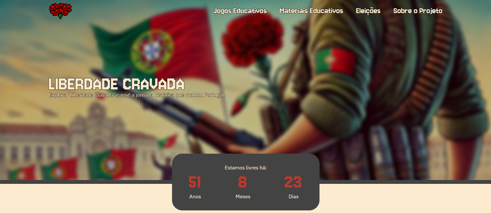
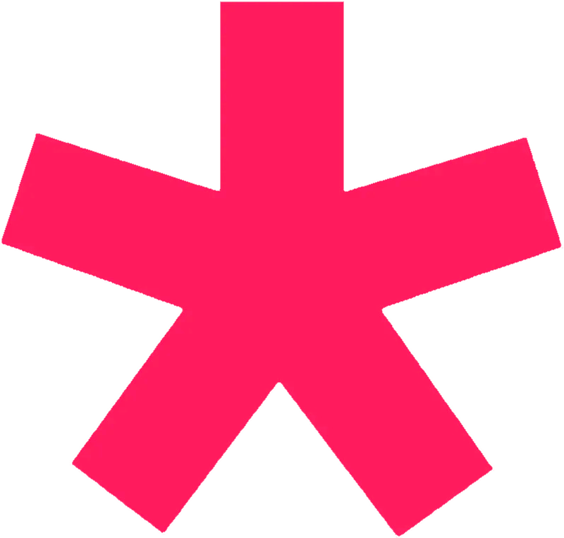

File
Edit
Format
View
Help
Liberdade Cravada
Context
Liberdade Cravada is an interactive web experience developed as an academic project focused on playful exploration, cultural context, and alternative forms of interaction. The project was designed for a younger audience, using a colorful, pixel-inspired aesthetic and game-like mechanics to encourage engagement rather than passive consumption. The experience combines visual interaction, data visualization, and physical input, placing strong emphasis on front-end logic and user behavior.

The Problem
The main challenge was to communicate complex information in a way that felt accessible and engaging to younger users. Traditional static interfaces felt insufficient for the intended audience, so the project needed to rely on interaction, visual feedback, and exploration rather than text-heavy explanations. At the same time, the project needed to handle multiple data sources and dynamic visual updates without overwhelming the user.
What I built
I designed and developed the entire project, including the website structure, interactive experiences, and game logic. I built:
-
Game logic an physicis implemented in p5.js, including:
- Object movement and rotation
- Object movement and rotation
- Object movement and rotation
-
Game logic an physicis implemented in p5.js, including:
- Object movement and rotation
- Object movement and rotation
- Object movement and rotation
Tech Stack
| Tech | Usage |
|---|---|
|
 p5.js |
Creative coding and visuals |
Table featuring different techs and its usability on the project
Challenges
One of the main challenges was synchronizing different interaction layers: visual animations, user input, data updates, and physical input. Ensuring that these elements responded smoothly without conflicts required careful state handling. Another challenge was keeping the experience intuitive despite the number of underlying systems involved.
What I learned
This project strengthened my ability to reason about complex interactive systems and reinforced the importance of clear architectural separation in front-end projects. It also deepened my understanding of how users engage with non-traditional interfaces and how visual feedback directly influences behavior.